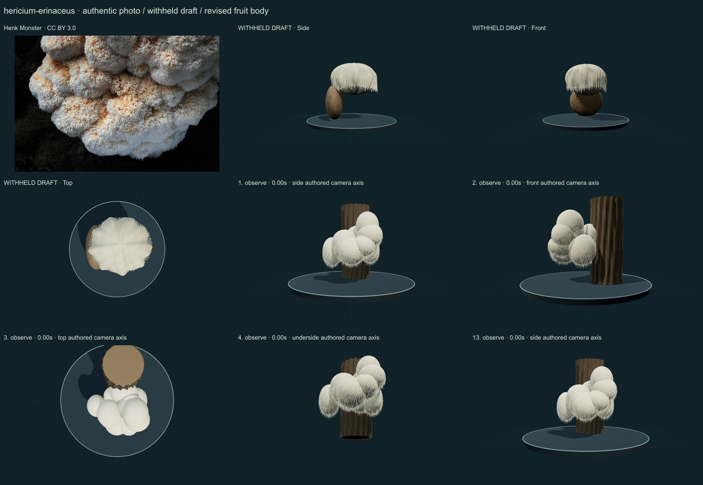
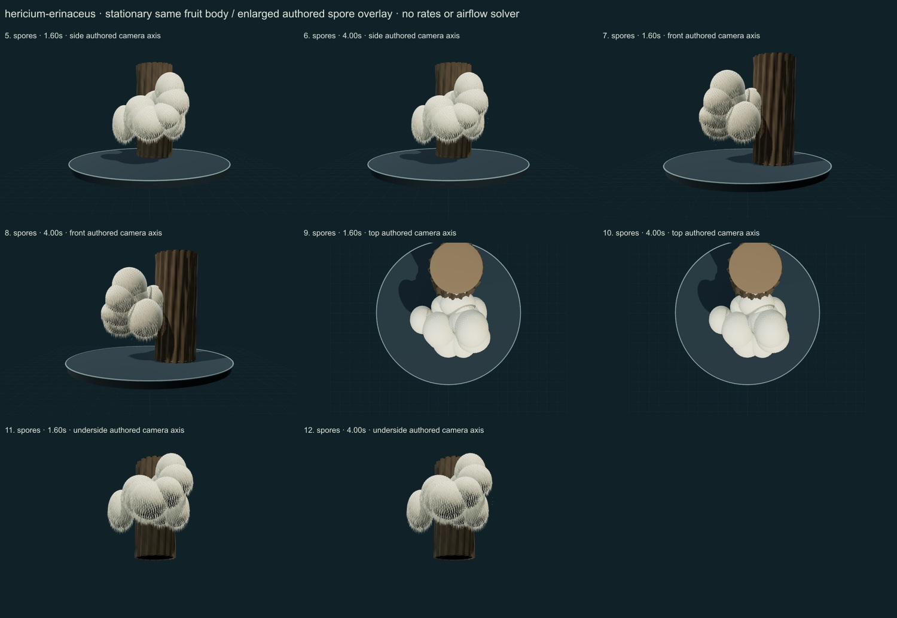

PhenoVoxel Archive · v0.6.25 · October25,2026
Lion’s mane fungus
293 records after verified publication. Seven saved drafts held;257 missing to550, including250 without drafts. Release register.
Koga, Thorn and Langer2025 selected multilocus/taxon-context text separates European H.erinaceus from regional members of the former global complex. The old Alison Northup photograph is associated with a North Carolina occurrence and was retained privately, not relabelled by geography. New Henk Monster CC BY3.0 Wolfheze Netherlands2015 photograph was actually viewed and compared. The paper's NC-ND figures were not reused. Neither photograph was molecularly redetermined.
Henk Monster · CC BY 3.0. European source-labelled phenotype selected in light of the2025 regional species-complex revision. No independent molecular determination or measured3D individual. Original North Carolina draft reference is retained privately as superseded broad-name evidence; it is not relabelled solely by geography. Rotated according to embedded orientation and resized inside1000px, flattened and JPEG encoded; no generative alteration.
Exact creator, source/license links and original/derivative checksums are retained in the linked data. The2025 Hericium paper is linked as a scholarly reference; its NC-ND figures are not reused. Additional copyrighted treatments/figures are not redistributed or sampled into material textures.
A selected European cream-white sessile lobed mass has dense shorter downward teeth over smaller connected lobes. It is distinct from the older broad-name North Carolina draft reference.
Original cream pigment and dense pendent tooth geometry; no generated photograph or source-pixel material. Lobes and tooth density remain a partial authored phenotype study.
Remaining: Lobes remain too rounded and some upper surfaces too smooth; tooth insertion, maturation and cream/brown age variation are incomplete. The source-labelled European image is not a molecular voucher, and broad-name occurrence assignments still need specialist reconciliation.
Stationary same tooth-bearing body with greatly enlarged authored spore drift; no growth, decomposition, medicinal effects, measured discharge or airflow simulation.
Partly stylized, unmeasured original educational reconstructions. Fine anatomy, age variation, tissue optics, dimensions and physiology remain incomplete. Enlarged spore dots are a teaching overlay with authored timing, not measured release, Buller-drop mechanics or an airflow solver. No independent specialist validation, scientific certification or accuracy percentage.
The underside camera temporarily hides contextual platform/grid. Contextual wood is authored support artwork, not a scanned host or proof of host specificity.
13 actual final nonblank main-viewer states individually inspected on two labelled sheets, with authentic photograph and withheld-draft comparison. Whole-body side/front/top, unobstructed underside and two representative overlay times per axis; qualitative author assessment, not independent specialist review.


Partly stylized, unmeasured original educational reconstructions. Fine anatomy, age variation, tissue optics, dimensions and physiology remain incomplete. Enlarged spore dots are a teaching overlay with authored timing, not measured release, Buller-drop mechanics or an airflow solver. No independent specialist validation, scientific certification or accuracy percentage. Prior285 species objects, including credited wolf/tiger meshes, are unchanged. Species-complex caveats remain visible. Recorded occurrences are not native ranges; legacy Protista/Monera are reporting conveniences.
Original geometry/controller MIT. Authentic photo portions retain the exact credited license; model-only frames contain original rendered geometry.
Exact findings, source scopes and screenshot hashes_white_spores_and_causes_white_rot%2C_at_Wolfheze_Bilderberg_-_panoramio.jpg){kind=link}